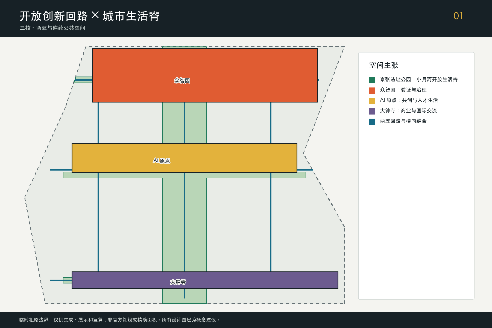
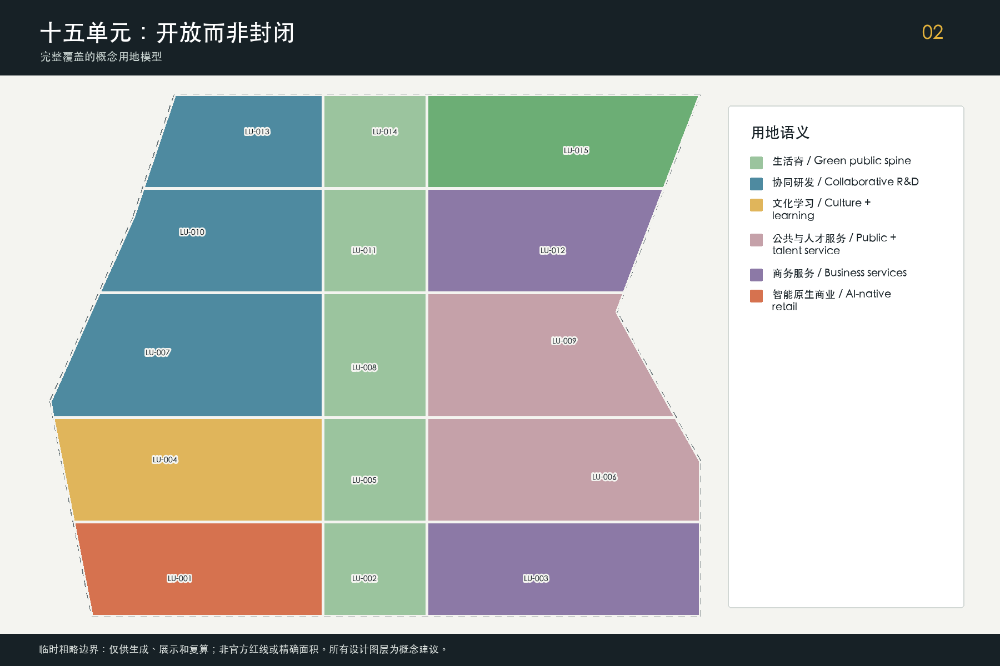
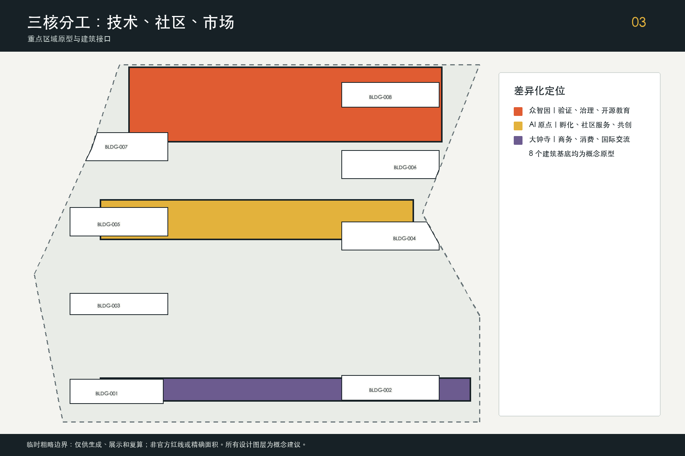
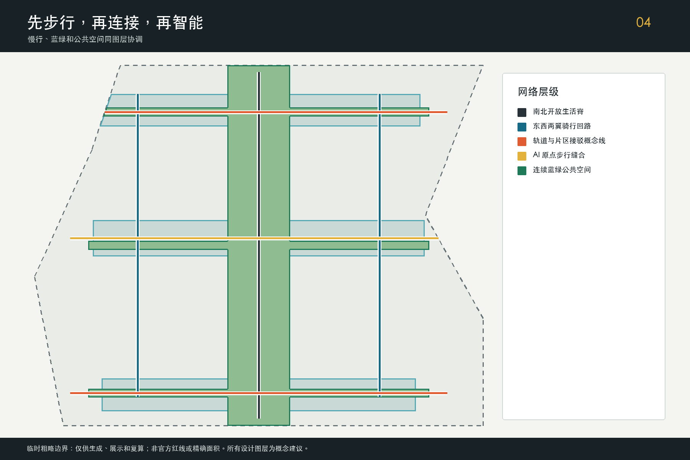
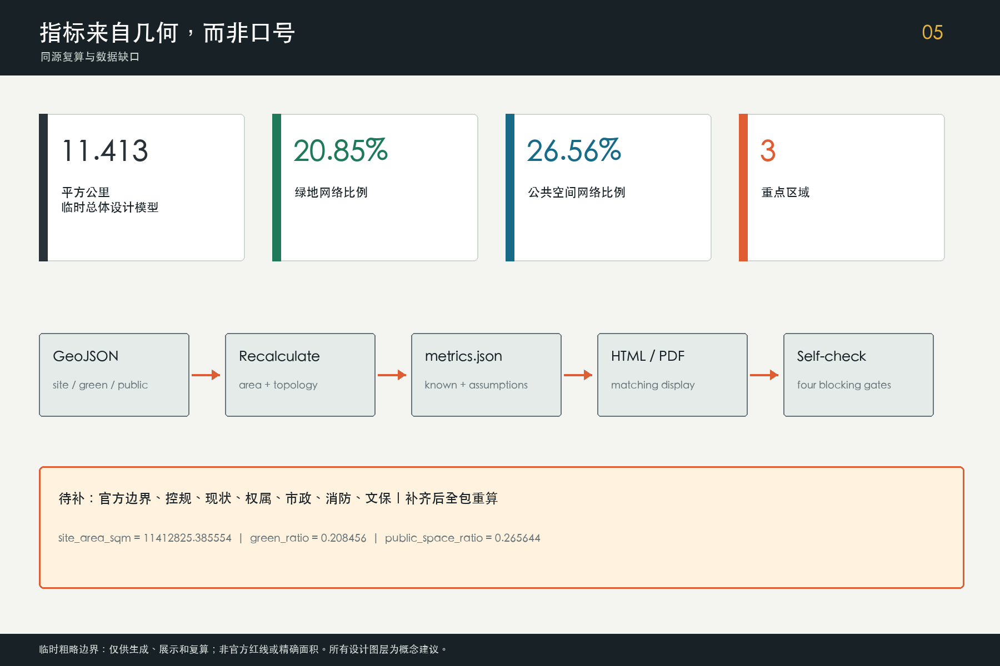

京张 AI 开放生活环 / Jing-Zhang AI Open Loop
以京张遗址公园—小月河生活脊串联三区两翼，把开放创新、公共生活和可审计 AI 场景组织为连续城市回路。
京张 AI 开放生活环
Jing-Zhang AI Open Loop
“开放生活环”不是封闭园区，也不是新的规划红线。它是一套把高校策源、企业转化、公共验证、人才生活和京张文化连接起来的城市工作系统：以京张遗址公园—小月河为南北生活脊，以众智园、北京 AI 原点社区和大钟寺为三处锚点，以中关村科技服务翼和小月河场景赋能翼形成东西回路。所有空间数据均可审计；所有 AI 场景均保留人工复核、退出和投诉路径。
设计依据与资料清单
方案以征集资格预审公告和智能体任务书为任务依据，以住建、自然资源和网络治理公开文件为专业边界。公告提供三层范围、三处重点区和成果深度要求；任务书补充“三区两翼”、六项 agent 任务、场景数量与长期运营要求 来源 来源。用地术语遵循公开分类指南，AI 服务只作为概念性城市服务设计，不替代规划审批、工程论证或法律意见 标准。
当前最重要的数据缺口是官方总体设计边界和三处重点区 polygon 尚未公开。提交包使用仓库维护的临时粗略几何进行生成、可视化和拓扑自检；它始终标注 official_boundary=false、geometry_role=provisional_constraint、boundary_precision=provisional_rough、confidence=low，不得解释为法定红线、地块边界或精确面积 来源 空间数据。官方几何到位后，将同步重算全部设计图层、指标、图件和 PDF，而不是局部替图。
全球案例采用 6 个机构公开页面作方法参照：新加坡 Punggol Digital District 的混合创新区、赫尔辛基和阿姆斯特丹的算法透明登记、巴塞罗那 Sentilo 开源城市传感平台、首尔 S-Map 数字城市表达、Montréal 的 AI 伦理原则。它们只支撑“可借鉴的方法”，不证明京张已有同等设施或治理能力；本包不复制其图片、商标和页面内容。完整版权、许可、访问日期与禁止用途保存在 sources.json，风险和复算触发保存在 assumptions.json 深度。

三层范围工作框架
统筹研究范围约 43.6 平方公里，用于讨论海淀乃至京津冀创新协同；总体设计范围约 11.4 平方公里，是本包 GeoJSON 的共同设计底板；三处重点区域公告合计约 368.4 公顷，用于验证功能、公共空间、交通和运营是否能落到具体片区。后两组面积在本包中仅作为公告值或临时模型复算值，精确结论待官方边界补齐 标准 深度。
空间结构概括为“一脊、三核、两翼、四段回路”。一脊是京张遗址公园—小月河开放生活脊；三核分别承担全栈验证与治理、开源成果转化与人才生活、智能原生商业与国际交流；西翼汇聚资本、法务、知识产权、人才和专业服务，东翼释放社区、公园与公共设施中的真实场景。四段回路对应北部门户、实验段、文化段和南部生活段，确保创新资源不是孤立园区，而是可步行、可停留、可反复使用的公共网络 空间数据 深度。
| 层级 | 核心判断 | 本包证据 | 待补条件 |
|---|---|---|---|
| 统筹研究 | 以开放创新回路组织区域生态 | 案例、产业机制、六项 agent 任务 | 区域企业和科研机构核验名录 |
| 总体设计 | 以生活脊统领用地、慢行和公共空间 | 15 个用地单元、6 条概念线路、连续绿地与公共空间 | 官方边界、控规、现状和权属 |
| 重点区域 | 三核分别验证技术、社区和市场端 | 3 个重点区、8 个建筑原型、12 张场景卡 | 重点区精确 polygon 与工程条件 |
这些层级采用同一坐标和同一证据链，避免研究判断、设计图和指标相互脱节。总体边界变化时，设计单元和比例均触发重算；统筹研究层的产业叙事则需要由最新公开数据和人类专业团队重新核实 指标 空间数据。
统筹研究范围产业与未来城市研究
开放生活环把“五大功能”转化为五类可运营接口：众智园承接全栈自主创新和安全验证；三区共同构成世界级 AI 创新生态；小月河翼提供 AI+ 场景试验；生活脊让智能化城市可被居民日常感知；公开登记、人工复核和年度评估形成治理话语。产业不按单一园区分区，而按“需求提出—合规授权—原型验证—公共体验—采购或市场转化—年度复盘”的循环组织 标准 深度。
| 公开案例 | 可借鉴方法 | 京张转译 | 明确限制 |
|---|---|---|---|
| Punggol Digital District | 产业、教育与公共环境协同 | 校园—园区—社区连续界面 | 不复制规模、企业或政策 来源 |
| Helsinki AI Register | 公开系统用途与责任 | 场景上线前登记用途、数据和复核人 | 不等同于中国合规结论 来源 |
| Amsterdam Algorithm Register | 算法可发现、可质询 | 公共场景设置说明牌与投诉入口 | 仅借鉴透明机制 来源 |
| Barcelona Sentilo | 开源传感平台与城市接口 | 采用最小化、可替换的设备与数据接口 | 不主张已部署同类平台 来源 |
| Seoul S-Map | 多尺度城市信息表达 | 用离线三层范围图服务讨论和复核 | 不复用其数据或视觉资产 来源 |
| Montréal Declaration | 负责任 AI 原则 | 公共利益、尊严、可问责作为场景门槛 | 原则参照而非法律意见 来源 |
未来城市形态的关键不是增加屏幕和传感器，而是降低跨组织协作成本。中关村科技服务翼提供资本、法务、知识产权、标准和人才接口；小月河场景赋能翼提供社区、公园、交通和公共服务中的真实问题；三核把问题转译为研发、验证、发布和消费。土地、空间、资金、人才、算力、数据和场景均采用“接口清单+责任主体+退出条件”，禁止把招商、资金或政府采购写成已承诺事项。
品牌识别以“Loop / 环”为核心：主标识建议由一条不断开的轨迹与三处开放节点组成，颜色使用铁路黑、公共绿、创新蓝和安全橙；不得直接使用铁路、企业、学校或机构商标。中文主名“京张 AI 开放生活环”、英文名 “Jing-Zhang AI Open Loop”兼顾历史地理与开放协作，Logo 和导视均待专业品牌团队开展查重、字体授权和无障碍测试。
总体设计范围城市更新与控规深度城市设计
总体设计以 15 个无重叠用地单元构成概念性全覆盖：四段生活脊使用绿地与开敞空间语义，两侧依次布置研发、文化学习、公共服务、人才服务、商务与智能原生商业接口。该分区是空间产业融合的设计模型，不是地块控规；分类代码用于统一机器语义，不能替代现行控规或用途审批 空间数据 标准 深度。
城市更新采取“先公共界面、再适应性利用、后新增容量”的次序。第一步处理断点、围墙边界、闲置首层和无障碍连续性；第二步把可保留建筑转为共享研发、发布、教育和社区服务；第三步才在专业调查后讨论新建或拆除。8 个建筑基底仅表达功能和体量位置原型，统一标注为 conceptual_new_or_adaptive_reuse_reference，不对任何现实建筑作拆改留判断 空间数据 深度。
开发强度、总建筑面积、建筑高度、道路红线和退界目前待正式数据补齐。方案不提供虚假 FAR 或高度值，而以三类控制方法供后续深化：生活脊保持连续、首层公共界面和遮阴；三核以中小尺度街区与可变共享空间承载迭代；临近文化、绿地和居住界面通过退台、通廊和低扰动运营控制体量。每项控制都需在官方控规、文保、日照、消防、市政和权属条件取得后由相应专业团队复核 深度 深度。

重点区域详细设计
三处重点区使用临时粗略 polygon，矩形边不得解释为道路或地块红线。它们在方案中不是三个同质“AI 园区”，而是回路上的技术端、社区端和市场端：众智园负责“能否安全可靠”，原点社区负责“能否被共同创造并日常使用”，大钟寺负责“能否进入商业和国际交流” 空间数据 深度。
众智园：全栈验证与治理公园。 以全栈验证协作楼、AI 治理开放实验室和开源教育交流站组成可预约的验证集群；沿清河和生活脊设置低碳步行界面，横向接驳概念线连接园区两侧。安全评测、端侧算力、机器人协同和低碳运维均先在封闭或半开放沙盒测试，再决定是否进入公共场景 空间数据 空间数据。
北京 AI 原点社区：人机共创公共客厅。 开源孵化厅和公共服务站沿东西步行缝合线布置，形成发布、法务、人才服务、教育和居民共议的一层连续界面。活动时段与夜间照明分级，居民服务保留非数字通道；高校成果只有在授权、知识产权和安全条件明确后进入测试 空间数据 空间数据。
大钟寺：智能原生商业与城市应用端。 以 AI 商务共享厅、智能原生街区原型和南部生活脊为组合，围绕轨道接驳讨论四象限步行连续、展示发布、内容消费和国际路演。任何桥隧、地下连通和交通组织均只作概念连接，待交通、消防、权属和工程可行性论证 空间数据 空间数据。

AI 创新生态、人才画像与 AI+ 场景
用户画像覆盖六类人：开源开发者需要可信发布和协作空间；初创团队需要低门槛测试和专业服务；高校师生需要成果转化与跨校协作；企业团队需要验证、招聘和国际交流；周边居民需要低扰动公共服务与休闲；老年人、儿童和残障使用者需要无障碍、可理解和人工兜底。画像只描述服务需求，不建立个人行为档案，也不用于商业推荐 标准 来源。
| # | AI 场景卡 | 主要用户与空间 | 数据、人工复核与运营边界 |
|---|---|---|---|
| 01 | 开源发布厅 | 开发者、高校；原点社区 | 只展示授权成果，主持人审核发布 |
| 02 | 模型安全治理沙盒 | 研发团队；众智园 | 隔离数据，红队与责任人共同放行 |
| 03 | 端侧算力驿站 | 初创团队；三核服务点 | 资源配额可审计，不接入个人敏感数据 |
| 04 | 无障碍慢行助手 | 居民与访客；生活脊 | 设备端优先处理，保留人工问路点 |
| 05 | 公共空间维护助手 | 运维人员；公园和小月河 | 只识别设施事件，不做身份追踪 |
| 06 | 社区服务共驾台 | 居民；原点公共服务站 | 生成建议须人工确认，保留线下办理 |
| 07 | 清河低碳运维看板 | 园区运维；众智园 | 设备级数据聚合，异常由工程师复核 |
| 08 | AI 商务匹配会客厅 | 企业；大钟寺 | 企业自主授权，不形成政府背书 |
| 09 | 数据合规诊所 | 初创团队；科技服务翼 | 法务、隐私与安全人员联合给出建议 |
| 10 | 京张文化共创导览 | 公众；文化段 | 史料来源可查，错误可报告并人工修订 |
| 11 | 城市活动安全副驾 | 运营者；三核活动 | 仅给风险提示，现场指挥保留决策权 |
| 12 | 开放场景项目库 | 开发者与场景方；全环 | 公布需求、责任、周期、退出与复盘记录 |
其中 02“模型安全治理沙盒”、07“低碳运维看板”和 11“活动安全副驾”构成三个产业测试验证场景。每个测试都经历需求登记、数据审查、限定场地小样、红队或故障演练、用户反馈、人类验收和退出复盘；通过测试不等于获得全面部署许可。场景节点与开放生活脊公共空间相连，但涉及公众的生成式服务仍需按适用范围评估投诉、内容安全和责任机制 来源 空间数据。
生态运营采用“场景券而非技术清单”：场景方公开问题和评价标准，团队提出可替换方案，中立评测组记录效果与副作用，居民或使用者能看到用途说明并选择非 AI 服务。这样，小月河场景赋能翼成为可治理的公共试验接口，而不是无边界感知区；中关村科技服务翼负责把验证结果转为知识产权、标准、融资和市场服务。
用地、建筑规模与拆改留方案
本包提交 15 个概念用地单元和 8 个建筑原型基底。用地总量等于临时总体设计范围的模型面积，单元之间无重叠；建筑基底合计约 160.83 万平方米，是设计图形的平面投影值，不是现状建筑面积、计容面积或批准建设规模 指标 空间数据。生活脊单元与两侧创新界面共同构成“开放而非封闭”的更新格局。
拆改留按证据门槛而非视觉印象决定。优先保留具有历史、结构和继续使用价值的建筑；对首层封闭、能耗高或功能不适配但结构可用的对象优先改造；只有在测绘、结构、文保、权属、消防、碳排和公众影响论证后才讨论拆除。当前缺少逐栋调查，因此图层只给出“新建或适应性再利用参照”，不得用于行政或投资决策 深度。
功能规模采用可变模块：研发和验证空间可在团队更替时拆分；公共服务和文化空间沿首层连续布置；商业展示与活动采用可预约共享厅，避免永久占用公共空间。屋顶优先讨论光伏、雨水、花园和设备维护的兼容，体量以生活脊视线、步行舒适和邻里低扰动为约束。正式总建筑规模、FAR 和高度均在取得控规、产权和现状测绘后复算。
交通、轨道、市政与公共服务设施
交通系统以“走得通、骑得连续、轨道易换乘、车辆不过度侵入”为顺序。开放生活脊慢行主线串联三核，东西两翼形成创新骑行回路；三条横向缝合线分别解决众智园、原点社区和大钟寺的跨界到达。6 条线路都是概念中心线，official_redline=false，不表达桥隧、道路红线或交通组织批准 空间数据 深度。
轨道站点周边优先完成地面层导向、遮阴、无障碍过街、共享单车停放和步行信息，而不是把地下连通当作默认答案。停车采取共享、错时、末端物流预约和活动交通管理组合；具体泊位和出入口待交通调查。慢行界面每一段均应提供非数字导视、休息点、饮水和夜间安全照明，并接受儿童、老年人和残障使用者参与式测试。
市政与新型基础设施采用“小单元、可隔离、可替换”原则：端侧算力驿站与公共 Wi-Fi、能源计量、雨洪和设施运维接口分离；传感设备有清晰编号、责任人、保存周期和停用方式；关键服务保留离线和人工通道。现有管线容量、防洪、消防、电力和通信条件均未知，任何设备落位须由市政、消防、网络安全和运营专业人员复核 深度。

蓝绿空间、公共空间与城市风貌
绿地网络把京张遗址公园、小月河和三处横向绿廊组织为连续生活脊。模型绿地面积约占临时总体设计范围 20.85%，公共空间网络约占 26.56%；两者可重叠，因为公共空间包含绿地、广场、步行界面和三处城市客厅，不能简单相加 指标 指标 空间数据。比例是可重算设计值，不是官方绿地率或审批指标。
三处“AI 朝圣地标”采用公共知识而非巨型物体作为核心：北部 开放验证门 展示模型、数据和安全评测的公开流程；中部 原点共创台 记录开发者、居民和高校的可追溯贡献；南部 城市未来厅 汇集智能终端、商业原型和国际交流。荣誉展示按贡献、复现和公共价值记录，不按资本规模排名；所有姓名、标识和成果展示均需授权 空间数据 标准。
公共空间组件库包括可移动共创桌、遮阴与充电一体座椅、离线/数字双通道导视、低位无障碍信息牌、可关闭的环境传感器、雨水花园边界和活动电源接口。城市风貌延续铁路工业的清晰结构、中关村的务实开放和 AI 新文化的透明可解释，避免炫技屏幕、过强声光和伪历史装饰。京张历史叙事由公开史料和专业机构校核，AI 生成内容必须标识并允许纠错 深度 深度。
更新项目清单、实施政策与分期计划
近期“先连公共生活”：完成临时边界复核、生活脊断点清单、原点社区公共客厅、无障碍慢行助手和开放场景项目库，以低工程依赖的试点建立治理规则。中期“再建验证网络”：在众智园形成安全沙盒、低碳运维和开源教育节点，并由科技服务翼提供法务、标准、人才和转化支撑。远期“形成市场与国际接口”：在大钟寺完善智能原生街区、城市未来厅和国际路演体系 空间数据 深度。
| 项目包 | 主要内容 | 启动门槛 | 退出或调整条件 |
|---|---|---|---|
| P1 生活脊连续行动 | 断点、遮阴、导视、无障碍、雨洪 | 官方边界与现状调查 | 文保、交通或居民影响不可接受 |
| P2 原点共创公共客厅 | 开源发布、社区服务、人才支持 | 场地授权和运营主体 | 扰民、低使用率或数据治理不达标 |
| P3 众智园验证网络 | 安全沙盒、端侧算力、低碳运维 | 安全、消防、能源和数据审查 | 测试风险超出限定场地能力 |
| P4 大钟寺智能原生街区 | 商务共享、展示消费、轨道接驳 | 交通、权属和商业可行性 | 公共性下降或交通负荷不可控 |
| P5 双翼服务与场景机制 | 专业服务、需求库、年度评测 | 合作规则和中立评测组 | 供应商锁定或评价不可复现 |
年度运营建议形成四季循环：春季开放问题征集，夏季小样与红队验证，秋季“Open Loop Week”公共展示和国际交流，冬季发布透明度、投诉、退出和空间绩效报告。开发者贡献通过复现记录和公共价值获得荣誉；企业从测试转向市场须另行完成采购、投资或商业决策。所有活动均为概念建议，不构成政府承诺或已确定日程 深度。
指标体系、面积复算与合规矩阵
三项核心视觉指标都能从提交 GeoJSON 复算：临时总体设计范围面积为 11,412,825.386 平方米；绿地比例为 0.208456；公共空间比例为 0.265644。建筑基底投影面积为 1,608,255.916 平方米，重点区数量为 3 指标 指标 指标。数值与 visual/index.html 的 data-value 一致，几何变化即触发重新生成。
合规矩阵覆盖公告 1.3、1.4、1.5 的 17 项任务和 agent.1—agent.6：总体概念与品牌、创新生态、12 张场景卡与 6 类画像、公共空间和 3 个地标、文化叙事、年度活动和长期运营均有正文、图层、图纸、可视化、来源、假设和自检证据。专业标准矩阵区分公告、任务书、城市设计、控规、用地分类和建筑设计深度；15 项设计深度矩阵均给出完成证据及受限数据 深度。

FAR、建筑高度、道路红线、总建筑面积和市政容量保持“待正式数据补齐”。这不是遗漏，而是对证据边界的明确表达：官方边界、控规、现状测绘、权属、市政、消防和文保条件到位后，由相应专业人员复核空间模型，再更新数值、矩阵、PDF、HTML 和 manifest 哈希。任何单独复制本页数字而脱离 provisional 说明的使用都不被本方案支持。
风险、版权与合规说明
主要风险包括：临时边界带来的空间争议；未知权属和控规带来的实施不确定；AI 场景涉及的隐私、安全、偏差和供应商锁定；活动对居民、交通和生态的扰动；公共空间数字化对老年人和残障使用者的排斥。对应措施是官方数据替换触发、分阶段小样、数据最小化、人工复核、非数字通道、公开投诉、可撤回设备和年度第三方评估 深度 来源。
本包文字、代码、几何设计、数据驱动图件、离线网页和 PDF 由声明的 AI agent 在当前征集上下文中生成。外部案例只作链接和事实性方法引用，没有下载、嵌入或再发布第三方图像、地图、字体、商标和页面资产；系统字体只在本地生成的栅格图中用于排版。具体授权和限制见 sources.json 与 report/copyright_statement.md。
方案是开放共创建议，不是审批成果、工程图、法律意见或招商承诺。生成式内容、翻译、历史叙事、无障碍、网络安全、交通、市政、结构、消防和文保事项均需人类专业团队最终判断。公开展示前还应检查个人信息、机构标识、商标、活动名称与贡献者授权。
参考资料
- 百年京张 AI 创新带城市设计国际方案征集资格预审公告 来源
- 面向全球智能体的开源征集任务书 来源
- 城市设计管理办法、控规编制审批办法与用地分类指南 来源
- 临时粗略边界及其推导说明 来源
- 生成式人工智能服务管理暂行办法与无障碍环境建设法 来源
- Punggol Digital District、Helsinki AI Register、Amsterdam Algorithm Register、Barcelona Sentilo、Seoul S-Map、Montréal Declaration 的公开页面 来源
完整书目信息、访问日期、使用许可和限制保存在 sources.json。案例不作为场地现状或官方规划证据；临时几何不作为法定控制。正文、结构化文件、图件、PDF 和离线网页共同构成本次可审计投稿包。